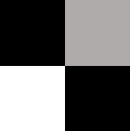

创建棋盘图像
I = checkerboard
I = checkerboard(n)
I = checkerboard(n, p, q)
I = checkerboard 创建一个 8×8 的正方形棋盘图像，该图像包含 4 个可识别的角点。棋盘图像由多个基本单元构成，每个单元包含 4 个小方块，每个小方块的默认边长为 10 像素。图像左半部分的浅色方格为白色，右半部分的浅色方格为灰色。
TILE = [BLACK LIGHT; LIGHT BLACK]

n 个像素。p 是基本单元的行数，q 是基本单元的列数。如果省略 q，列数默认为 p，棋盘为正方形。每个小方块的边长为 n 个像素。
n — 每个方块的边长（以像素为单位）
10（默认）| 正整数
棋盘图案中每个方块的边长，以像素为单位，指定为正整数。
棋盘图案中棋盘格的行数，指定为正整数。由于每个棋盘格包含四个方块，因此棋盘中有 2*p 行方块。
棋盘图案中棋盘格的列数，指定为正整数。如果省略 q，其值默认为 p，棋盘为正方形。由于每个棋盘格包含四个方块，因此棋盘中有 2*q 列方块。
具有棋盘图案的矩形图像，以 2 维数值数组的形式返回。棋盘左半部分的浅色方块为白色，右半部分的浅色方块为灰色。
数据类型：double
在北太天元图像处理工具箱 V1.0 推出